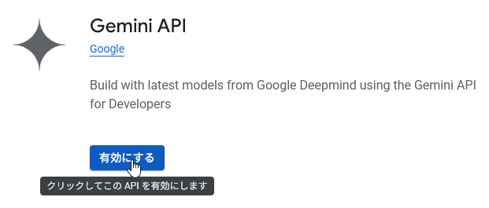
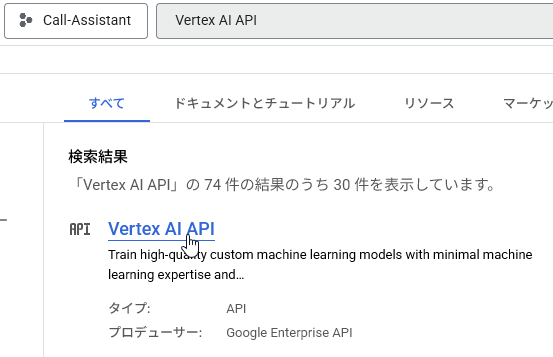

- Google Cloud Platform にサインインする
- Googleアカウントが必要です。
- 初めての利用の場合には案内が表示されます。利用規約をお読みいただき、「同意して続行」を押してください。
- また、プロジェクトの利用には請求先アカウントが必要です。設定されていない場合には、画面上部の「無料で利用開始」を押し、登録してください。
- クレジットカード情報の登録が必要ですが、無料枠内での利用であれば請求は発生しません。
- Google Cloud Platformの無料枠についてはこちらをご覧ください。
- 2025年10月時点で、文字起こしは約2.4円/分、要約は入力0.01ドル/100万トークン、出力0.4ドル/100万トークン（日本語1文字につき約1～3トークン）です。
- プロジェクトを作成する
- 左上の「プロジェクトを選択」やプロジェクト名の書かれているボタンを押してください。
- 右上の「新しいプロジェクト」をクリックします。
- 「Voice-note」など任意の名称を設定し作成を押します。
- 再び「プロジェクトを選択」を押し、先ほど作成したプロジェクトを選択します。
- 左上のボタンが先程作成したプロジェクト名になっていれば選択できています。
- APIの有効化
- 画面上部の検索バーに「Speech-to-Text」と入れて検索し、「Cloud Speech-to-Text API」をクリックします。 ※Cloud Text-to-Speech APIではありません。
- 「有効にする」を押します。
- 同様に、「Gemini」「Vertex AI」で検索し、「Gemini API」「Vertex AI API」を有効化します。


- ここで各APIについて、「データロギング」のメニューから「データロギングを有効にする」というオプションを有効化しない限り、使用時の情報が収集・利用されることはありません。
- サービスアカウントを作成する
- 左上メニュー→APIとサービス→認証情報を押してください。
-
サービスアカウントを管理をクリックしてください。
-
サービスアカウントを作成をクリックしてください。
-
適当な名前をつけたら、続行を押してください。
-
「役割を選択」から「基本」→「閲覧者」を選択し、完了を押します。
- サービスアカウントのJSONキーをダウンロードする
-
再び左上メニュー→APIとサービス→認証情報を押してください。
-
サービスアカウントのアドレスを押します。
-
「鍵」タブを選択し、「キーを追加」→「新しい鍵を作成」を押し、キーのタイプはJSONのまま作成してください。
- ダウンロードした JSON ファイルを指定の場所に配置する
- Voice Note.exeが存在するフォルダを開き、resourcesフォルダを開いてください。
- 先ほどダウンロードした鍵のJSONファイルを、「google-credentials.json」という名前で移動してください。
以上でセットアップは完了です。鍵を追加・変更した場合は、Voice Noteを再起動してください。